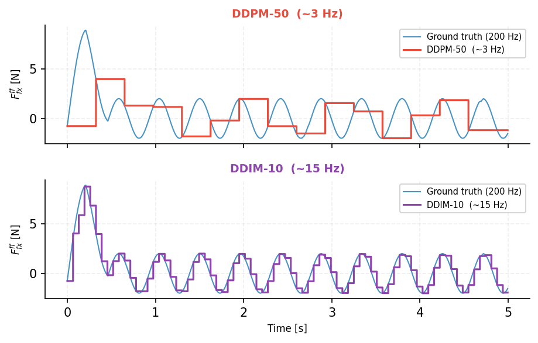
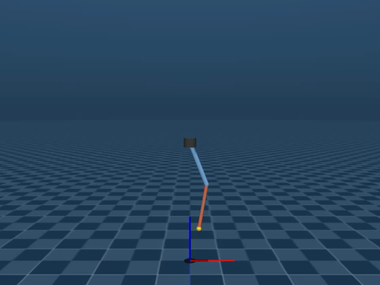

Work that isn't part of the teleoperation stack.
Estimation under bad measurements, optimal control of an underactuated system, and the simulation layer the rest of it runs on. Separate problems, same discipline.
Teaching a policy to feel its way into a hole.
Sub-millimetre clearance insertion, controlled entirely in the force domain — no vision, no privileged pose. A scripted expert collects demonstrations, generative policies learn from them, and the learned policy is deployed back into the same environment and measured against the expert that taught it.
Collecting the demonstrations
A four-phase expert runs approach, contact, search, and insert under Cartesian impedance control, with feed-forward Lissajous force profiles during the search. Every episode perturbs the hole pose and the approach setpoint independently, so the dataset covers a spread of misalignment conditions rather than one nominal case. Trajectories are logged at 200 Hz into HDF5 with per-episode outcome metadata.
Expert policy adapted from Wu et al., 1 kHz Behavior Tree for Self-adaptable Tactile Insertion, ICRA 2024.
Learning from them
Two model families on an identical observation and action interface: a diffusion policy (DDPM, sampled with DDIM) and a CVAE. The observation is eighteen dimensions of pure force and motion — external wrench, internal wrench from joint torques, and end-effector velocity. The action is a six-dimensional feed-forward wrench, filtered and applied through impedance control at 200 Hz.
An architecture search across six variants found early fusion of all input streams to be the decisive design choice.
The learned policy beats the expert that trained it
| Policy | Cylinder (trained) | Rectangle | Hex |
|---|---|---|---|
| Deterministic expert | 61% | — | — |
| DDPM-50 | 67% | — | — |
| DDIM-5 | 62% | — | — |
| DDIM-10 | 78% | 74% | 65% |
Fifty closed-loop episodes with randomised hole-pose perturbation. Sim Rectangle and hex columns are zero-shot — DDIM-10 trained only on the cylindrical peg, deployed on unseen geometries without retraining.



Inference rate is a control problem
The same trained weights fail or succeed depending only on how fast they can be sampled. DDIM sampling cut inference from roughly 325 ms to 59 ms without retraining — about 3 Hz to 15 Hz — and that alone was the difference between a policy that tracked the reference and one that stepped past it.
In a contact-rich loop, a policy's deployment rate is not an implementation detail. It is part of whether the policy works at all.
Why this task, twice
Tight-clearance insertion is also one of the two tasks in the user study — there, measuring what guidance does for a human operator. Here, measuring what a learned policy can do on the same problem. The human side and the policy side of the same manipulation task.
Pushing an object you cannot see clearly.
Nonprehensile manipulation is hard enough with perfect state. This project asks what happens when the camera is the state estimator and the camera is unreliable — and whether telling the controller about its own uncertainty is worth the cost.
The setup
Quasi-static pusher-slider dynamics after Hogan and Rodriguez, with state [x, y, θ, py] and control [vn, vt]. Stick and slide contact modes are handled implicitly through a smooth tanh approximation of the motion-cone boundaries, which keeps the problem a plain nonlinear program — no mixed-integer solve.
A vision thread at 60 Hz runs ArUco detection and PnP pose estimation. A separate propagation thread at 100 Hz runs an extended Kalman filter and solves the NMPC with acados using SQP real-time iteration, feeding a Cartesian arm controller.
Three controllers, one question
- Baseline
- Nominal NMPC on the raw pose estimate
- Certainty equivalent
- NMPC on the EKF mean, ignoring covariance
- Uncertainty aware
- Chance-constrained NMPC, tightening constraints by the EKF covariance at the 95th percentile
Evaluated over a 360-run sweep with injected measurement noise, dropout, and latency, plus a separate sensitivity study on the tightening factor.
The result that didn't go my way
Chance-constrained tightening costs about eight percentage points of success rate in clean conditions, because the tightening is always on whether or not the estimate is actually uncertain. In an unconstrained workspace the benefit is modest.
Worth reporting precisely because it bounds where the method is useful.
Three ways to catch a double pendulum.
Swing-up and stabilisation of an underactuated double pendulum, implemented three times so the trade-offs are measured rather than argued.
- LQR
- Passivity-based energy-shaping swing-up, a four-condition catch test, then an infinite-horizon LQR gain from the discrete algebraic Riccati equation.
- iLQR
- Offline trajectory optimisation across seven warm-start seeds, with short-horizon online replanning and RK4 integration.
- MPC
- Direct multiple shooting, twenty-step horizon at 40 ms, CasADi with IPOPT, DARE-based terminal cost.

Why it runs in two processes
Physics and control sit in separate operating-system processes connected by shared memory, so the simulation clock never stalls waiting on the controller. With an MPC solve around eight milliseconds, that separation is the difference between measuring the controller and measuring the solver.
Things built once and reused.
SimCore
A MuJoCo simulation layer holding robot kinematics, camera rendering, and object state access, built as an installable package and pulled in as a dependency by the projects above rather than copied between them.
Sigma 7 haptic control
A standalone control stack for the Sigma 7 force-feedback device — Cartesian impedance and guidance-force rendering in a 1 kHz loop — maintained independently of the teleoperation system it originally served.